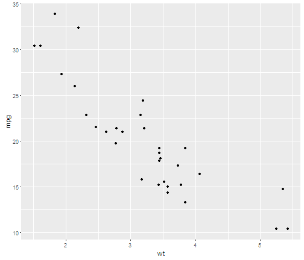

- Edit YAML front matter
- Write using R Markdown
- Use an empty line followed by three dashes to separate slides!
Chong Zhi Xiong
Teacher
The haze phenomenon has persistently return to Malaysia and Singapore on an annual basis over the past 3 decades.
This simple application was created to illustrate and analyse the Air Pollution Index (API) readings collected from 2013 to 2015 at the town Banting (near capital Kuala Lumpur) in Malaysia to examine the haze situation.
This was built as part of a deliverable for the course Developing Data Products (https://www.coursera.org/learn/data-products/home/welcome) as part of the Coursera Data Science Specialization.
Let us create a simple scatterplot.
require(ggplot2)
qplot(wt, mpg, data = mtcars)
